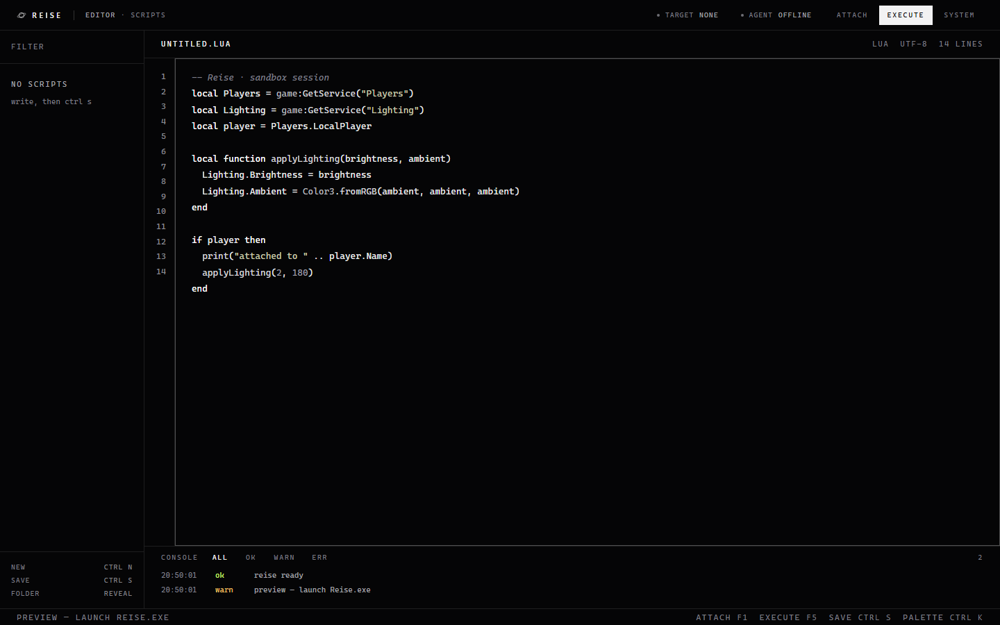

Attach once, pick any session
Discovery runs through WMI, a Toolhelp snapshot and a local process scan, so it still finds the client when it lives in another window station. Several clients open at once — pick the one you mean from the target chip.
Reise attaches to a process you own, gives you a real editor with Lua highlighting and a live console, keeps every script on disk, and updates its own runtime with a hash check. No dashboards, no telemetry, no noise.

Discovery runs through WMI, a Toolhelp snapshot and a local process scan, so it still finds the client when it lives in another window station. Several clients open at once — pick the one you mean from the target chip.
Syntax colouring for keywords, strings, comments and the service globals, a synced line gutter, tab-to-indent, and the file's line count in the tab bar.
Every action lands in a timestamped list, filterable by ok / warn / err. Empty states tell you the next step instead of showing nothing.
Saved as plain .lua next to the executable. Filter the list, open the folder,
edit in any other editor whenever you want.
Reise compares its local runtime hash with the build server, downloads the new one, verifies SHA-256, replaces the file and restarts it hidden.
A failed attach prints the process counts it could see and which layer returned them, so a visibility problem is never a mystery.
-- header REISE editor · scripts target agent Attach Execute System -- left filter speed.lua 0 KB fullbright.lua 1 KB -- centre untitled.lua lua utf-8 14 lines 1 -- Reise · sandbox session 2 local Players = game:GetService("Players") 3 local player = Players.LocalPlayer … -- dock console all ok warn err 20:50:01 ok reise ready
// palette attach target execute script save script new script reveal scripts folder diagnose visibility check runtime update
:: WebView2 assemblies, from nuget.org
Microsoft.Web.WebView2.Core.dll
Microsoft.Web.WebView2.WinForms.dll
WebView2Loader.dll
:: put them in lib\ then
powershell -ExecutionPolicy Bypass -File build.ps1
:: compiled with the in-box compiler
C:\Windows\Microsoft.NET\Framework64
\v4.0.30319\csc.exe
/target:winexe /platform:x64
:: output
Reise.exe 47 KB
ui\ the interface
scripts\ your .lua files
| Capability | Status | Note |
|---|---|---|
| Native window, own icon, dark interface | works | WebView2 host, no browser chrome |
| Attach to a running process | works | WMI → snapshot → local scan, deduped |
| Multi-account target picker | works | pid, executable, game id per row |
| Editor, console, script storage | works | plain files in scripts\ |
| Runtime update with hash check | works | SHA-256 compared before replacing |
| Executing Luau inside Roblox | not implemented | Hyperion blocks external injection and re-validates code pages every build; Reise says so instead of faking a success |